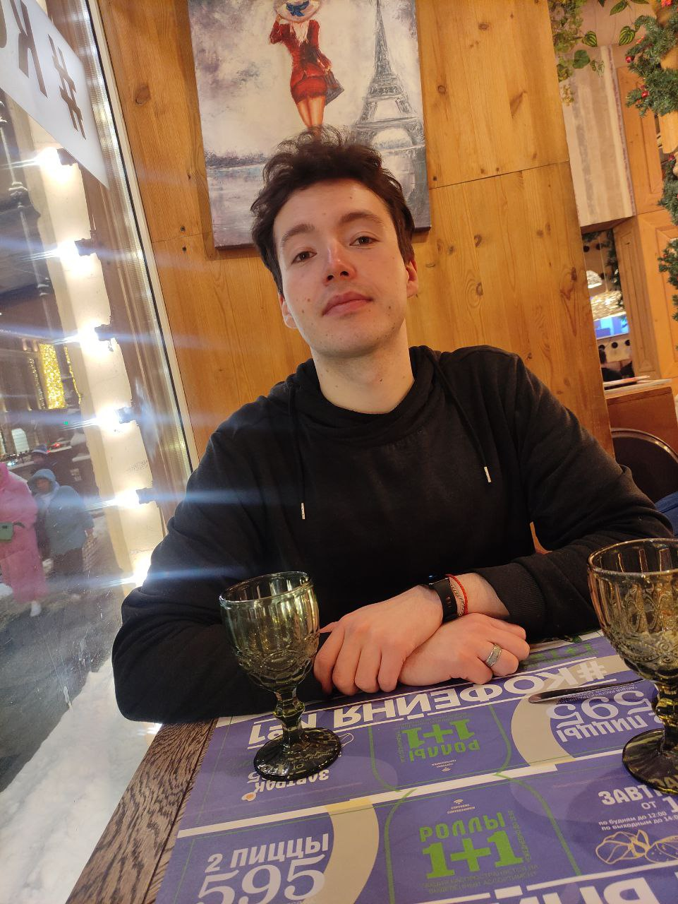

НЕМНОГО ОБО МНЕ
Искать. Учиться.
Создавать.
Я Артём Зарипов, профессиональный музыкант и тромбонист. Музыка научила меня работать над деталями, сохранять концентрацию и не останавливаться на достигнутом.
Мне интересны новые технологии, спорт, путешествия и идеи, которые помогают сделать жизнь свободнее и интереснее.
СейчасНовый Уренгой
ПрофессияТромбонист
ПодходРазвитие каждый день